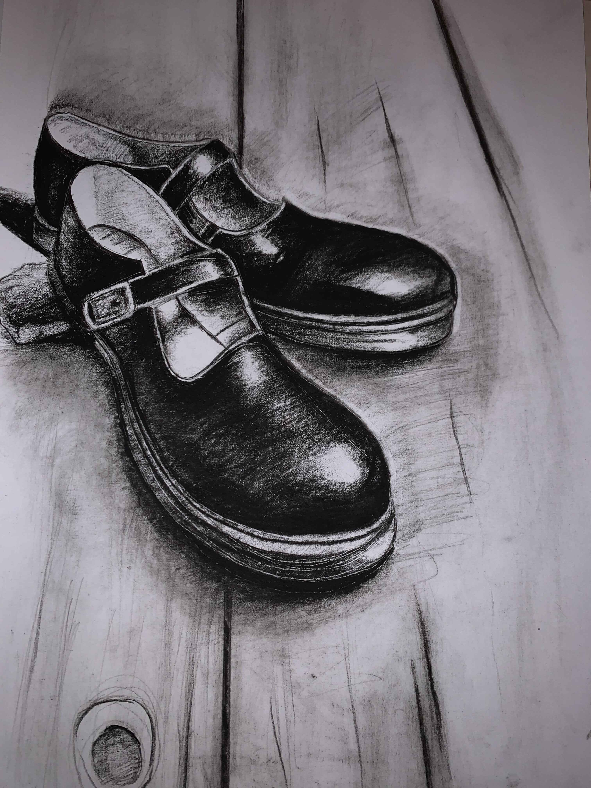

This artpiece represents a sad Rhino to be able to raise the awarness to the viewer using shading technique which is the main technique used in this artpiece giving it a darker look and a sad, pity feeling to the reader/ viewer, as many Rhinos are being extinct from this world especially in Africa.
This artpiece was inspired to me by the story of propheit yunus that represents to the viewer no matter what circumstences you are kept in and hard times your living in know that god will always help you and be there with you all the time. As you can see I’ve used in this artpiece the shading and highlighting technique too!.
 Shading and shadowing as well as highlighting techniques were used in this art piece to be able to draw something that many families can't afford to their children and which is a part of your school uniform that many children these days can’t achieve to go through life experience which makes me and the viewer feel pity and sad about.
This artpiece was another drawing I challenged myself with as it is a 3D drawing as shown from a different angle than usual. However, I used my shading and shadowing techniques to draw this 3D chair with a book on top. Being able to draw it makes me very proud.
Looking at this art piece alone you would feel sad, deppressed, and maybe pity about this old man thinking about life and reflecting towards it. However, I used the shading technique only to draw this art piece and some highlighting as well.
There's a deep meaning that this drawing have that may differ from each person's point of view. I used in this drawing all 3 techniques: Shading, Shadowing, and highlighting techniques giving me a sad, depressed, and pity feeling.
This an art piece that I'm very proud of as I challanged myself drawing it because 3D drawings are very hard to draw especially using shading and highlighting techniques.
From my point of view this drawing represents the souls that are trapped behind the vail of life and death which make me and the viewer feel very sad due to hand that has been shaded fully as well as the body not to mention the highlighting techniques used also.
This art pieces expresses my feelings and imagination about my future dream house as I love nature so surrounding it makes me very happy. However, this drawing represents my shading and highlighting techniques too.
This art piece shows the younger you are the happier you are as it will disappear slowly as your grow up. This drawing can have different point of views on it that differs from mine as you can see near the old man has much shading and dark colors and where the child has a bright background surrounding him.
The best thing to practice your shading and shadowing techniques in is using a vegetable or apple to draw. Not to metion the hillighting techniques as shown above. Drawing it makes me feel like a real artist.
Is the glass half full or half empty? (Physiologists use simple tests like this to determine wether a person tends to be optimist or a pessimist. Where the optimist will usually say the glass is half full (positive). While the pessimist will say the glass is half empty (negative). For this drawing I used the shading and highlighting techniques to create this 3D art.